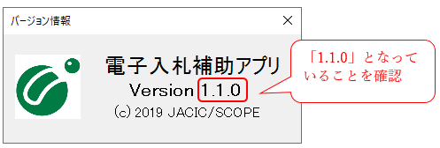
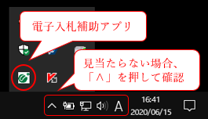
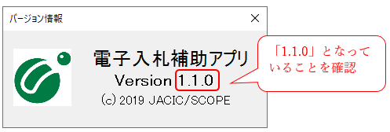
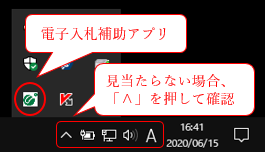

R4.2.14
より
より
システムの御利用にあたっては、必ず電子入札補助アプリのバージョンアップ作業が必要となります。
- 岡山県電子入札システムは、令和4年2月14日（月）から、新バージョンに移行しました。
- 移行日以降にシステムを利用するためには、全ての事業者様におかれまして、電子入札補助アプリのバージョンアップが必要です。
- バージョンアップを行わなかった場合、新バージョン移行後は、岡山県電子入札共同利用システムが御利用いただけません。
- システムをご利用の際には、必ず電子入札補助アプリのバージョンアップ作業をお願いします。
- 新バージョンより Microsoft Edge に対応しました。推奨ブラウザは Microsoft Edge となりますので移行作業を御願いします。
- Microsoft Edge をご利用するためには、お使いのパソコンの設定作業が必要となります。（設定方法は下記を参照ください。）
- Internet Explorer 11 は、令和4年6月16日（日本時間）をもってサポート終了となりますので、早めに移行作業を御願いします。
- Windows 11 については、現在未対応となっています。今後の対応は改めてご案内いたします。
- バージョンアップにより、一部機能の追加や変更がありますが、基本的な操作方法や画面の見た目は変更ありません。
- ただし、「中止、不調となった案件」がデフォルトでは表示されなくなりました。「中止、不調となった案件」を表示させるためには、検索条件を変更する操作が必要となります。（詳細は下記を参照ください。）
※新規にパソコンを設定する場合は、ポータルサイト左メニューの「事前準備」ページを参考にして、初期設定をお願いします。
電子入札補助アプリのバージョンアップ方法

※電子入札補助アプリのバージョンを確認する方法は、こちらを参照ください。
 Microsoft Edgeの利用方法
Microsoft Edgeの利用方法
Microsoft Edge をご利用するためには、お使いのパソコンの設定作業が必要となります。設定する内容は以下の3点となります。
電子入札ヘルプデスク 電話番号 ０１２０－４３２－１９８
受付時間 ８：３０～１７：１５（土日・祝日・年末年始を除く）
- 信頼済みサイトの登録
- ポップアップの許可設定
- 既定ブラウザの設定
 クライアント環境設定マニュアル
クライアント環境設定マニュアル- 古いEdge ・・・または
- 新しいEdge ・・・
電子入札ヘルプデスク 電話番号 ０１２０－４３２－１９８
受付時間 ８：３０～１７：１５（土日・祝日・年末年始を除く）
新バージョンにおける注意事項
新バージョンより「中止、不調となった案件」がデフォルトでは表示されなくなりました。
「中止、不調となった案件」を表示させるためには、検索条件を変更する操作が必要となります。
詳細については以下を参照ください。
「中止、不調となった案件」を表示させるためには、検索条件を変更する操作が必要となります。
詳細については以下を参照ください。
ＩＣカードにより認証している事業者様
電子入札補助アプリのインストール方法は、ＩＣカードを発行した民間認証局ごとに異なります。
ＩＣカードを購入した認証局を確認の上、それぞれのお問い合わせ先へご確認ください。
ＩＣカードを購入した認証局を確認の上、それぞれのお問い合わせ先へご確認ください。
| 民間認証局 | お問い合わせ先 |
|---|---|
| ＮＴＴビジネスソリューションズ株式会社 （旧株式会社ＮＴＴネオメイト） e-ProbatioPS2 |
URL:https://www.e-probatio.com/news/detail.html?id=345 TEL:0120-851-240 |
| 株式会社帝国データバンク TDB電子認証サービスTypeA |
URL:https://www.tdb.co.jp/typeA/support/01_07.html#q32 TEL:0570-011-999 |
| 東北インフォメーション・システムズ株式会社 TOiNX電子入札対応認証サービス |
URL:https://www.toinx.net/ebs/news/tx_app_verup.html TEL:022-799-5566 |
| 日本電子認証株式会社 AOSignサービス |
URL:https://www.ninsho.co.jp/aosign/news/20210914-1.html TEL:0120-714-240 |
| 三菱電機インフォメーションネットワーク株式会社 DIACERT-PLUSサービス |
URL:https://www.diacert.jp/plus/news/2021.html#2021090801 TEL:03-6771-5108 |
簡易認証(ＩＤ/パスワード）により認証している事業者様
簡易認証(ＩＤ/パスワード）により認証している事業者様は、「電子入札補助アプリ」をバージョンアップする必要があります。
「電子入札補助アプリ」 をダウンロードし、下記によりバージョンアップをしてください。
■使用許諾
ダウンロードファイルの中にある 「電子入札補助アプリ 使用許諾契約書」 をご参照ください。
■バージョンアップ方法
ダウンロードファイルの中にある 「電子入札補助アプリ インストール手順書」内の「6. バージョンアップ」をご参照ください。
■よくある質問
ダウンロードファイルの中にある 「電子入札補助アプリ FAQ」 をご参照ください。
■電子入札補助アプリについてのお問い合わせ先
電子入札ヘルプデスク 電話番号 ０１２０－４３２－１９８
受付時間 ８：３０～１７：１５（土日・祝日・年末年始を除く）
「電子入札補助アプリ」 をダウンロードし、下記によりバージョンアップをしてください。
電子入札補助アプリのダウンロードはこちらをクリック
■使用許諾
ダウンロードファイルの中にある 「電子入札補助アプリ 使用許諾契約書」 をご参照ください。
■バージョンアップ方法
ダウンロードファイルの中にある 「電子入札補助アプリ インストール手順書」内の「6. バージョンアップ」をご参照ください。
■よくある質問
ダウンロードファイルの中にある 「電子入札補助アプリ FAQ」 をご参照ください。
■電子入札補助アプリについてのお問い合わせ先
電子入札ヘルプデスク 電話番号 ０１２０－４３２－１９８
受付時間 ８：３０～１７：１５（土日・祝日・年末年始を除く）
「電子入札補助アプリ」のバージョン確認方法
パソコンの画面右下の「電子入札補助アプリ」のアイコンの上で右クリックをして、「バージョン情報表示」を選択してください。バージョンが「1.1.0」となっていることを確認ください。（バージョンが「1.0.0」となっている場合は、バージョンアップの設定作業が必要です。）
アイコンが見当たらない場合は、「Λ」をクリックしてアイコンが表示されるかどうか確認してください。（アイコンが表示されない場合は補助アプリがインストールされていませんので、ポータルサイトの事前準備ページを参照して設定作業を実施してください。）

アイコンが見当たらない場合は、「Λ」をクリックしてアイコンが表示されるかどうか確認してください。（アイコンが表示されない場合は補助アプリがインストールされていませんので、ポータルサイトの事前準備ページを参照して設定作業を実施してください。）

注意事項
▶ アプリケーションの設定作業を実施しない場合、新バージョンに切り替わった電子入札システムが動作しません。
▶ 民間認証局の問い合わせ窓口の混雑が予想されますので、早めの設定作業をお願いします。